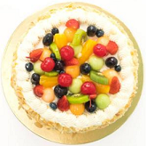

食谱世界
魔法蛋糕

Magic Cake is one of the tastiest cakes the world has ever known.Few have tried it and lived to tell about it,and there are their stories
如果希望获取更多学习文档与资料请访问（当前窗口）乾颐堂官网
如果希望获取更多学习文档与资料请访问（新的窗口）乾颐堂官网
成分
- 2 eggs
- 1 pound of sugar
- 3 sticks of butter
制作方法
- Mix eggs, sugar, and butter in a large bowl.
- Spread into a non-stick dish
- Bake at 350 degrees for 1 hour
- Let sit a room temperature for 20 minutes
- Eat and enjoy!
查询思科资料与信息请访问思科官网